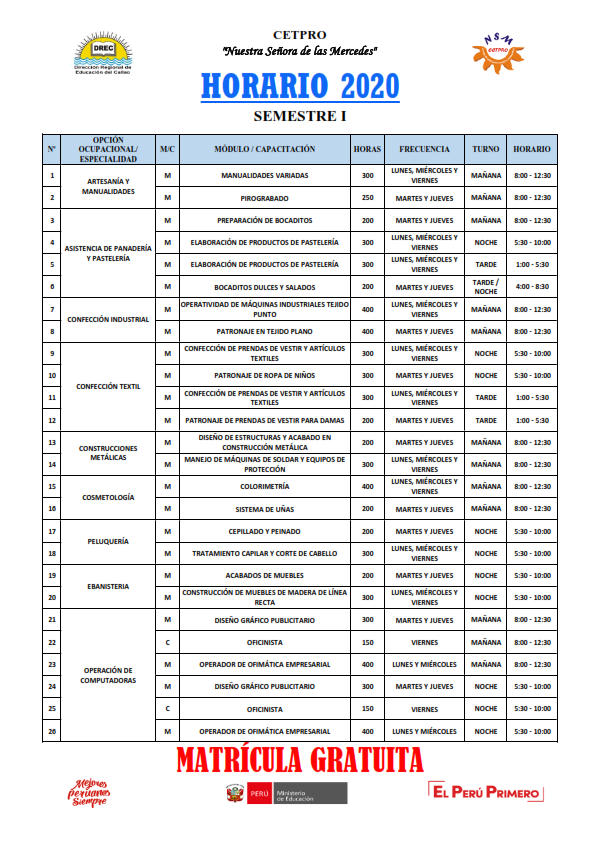

Torneo deportivo CETPRO 2025
Con gran entusiasmo, los estudiantes participaron en el torneo anual de fútbol y vóley, promoviendo el compañerismo y la vida saludable.
Leer más »Con gran entusiasmo, los estudiantes participaron en el torneo anual de fútbol y vóley, promoviendo el compañerismo y la vida saludable.
Leer más »
El CETPRO anuncia la apertura de talleres orientados a negocios digitales, desarrollo web y marketing en redes sociales para el próximo ciclo.
Leer más »